The Flesh Engineers
The Reapers serve as the indispensable support branch of the Kharos Dominion. These necromancers bolster the army's ranks with mindless undead bound eternally to their will. Such creations are incredibly flexible, granting the Dominion's forces immense adaptability and endless reinforcements on the battlefield.
Led by reclusive Necromancers, this branch holds zero reverence for the deceased. To them, corpses are merely raw materials for dark experiments—fuel for the creation of ever-more-powerful minions. The cheapest and most common of these materials is the basic Skeleton.
As these undead are exposed to dark magic and warfare, they can be molded along different paths. They might be given rusted blades to become Fighters and eventually heavily armored Champions, fused with rotting meat to form unstoppable Zombies and Flesh Golems, or handed a bow to become deadly, truesight-gifted Snipers. All these dark arts culminate in the ultimate necromantic masterpiece: the dreaded Death Dragon.
Active Roster
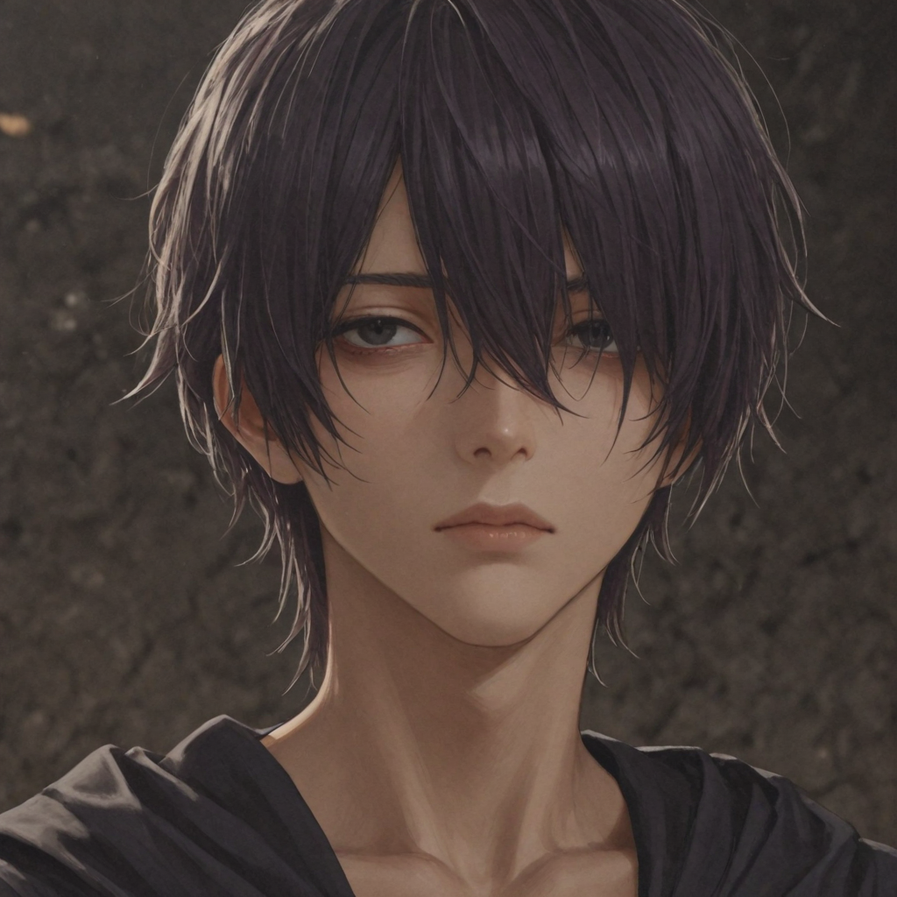
Necromancer
Spellcasters who have mastered shadow magic to bolster their undead creations. They view living beings as "too expensive and slow to grow," preferring the company of their silent minions.
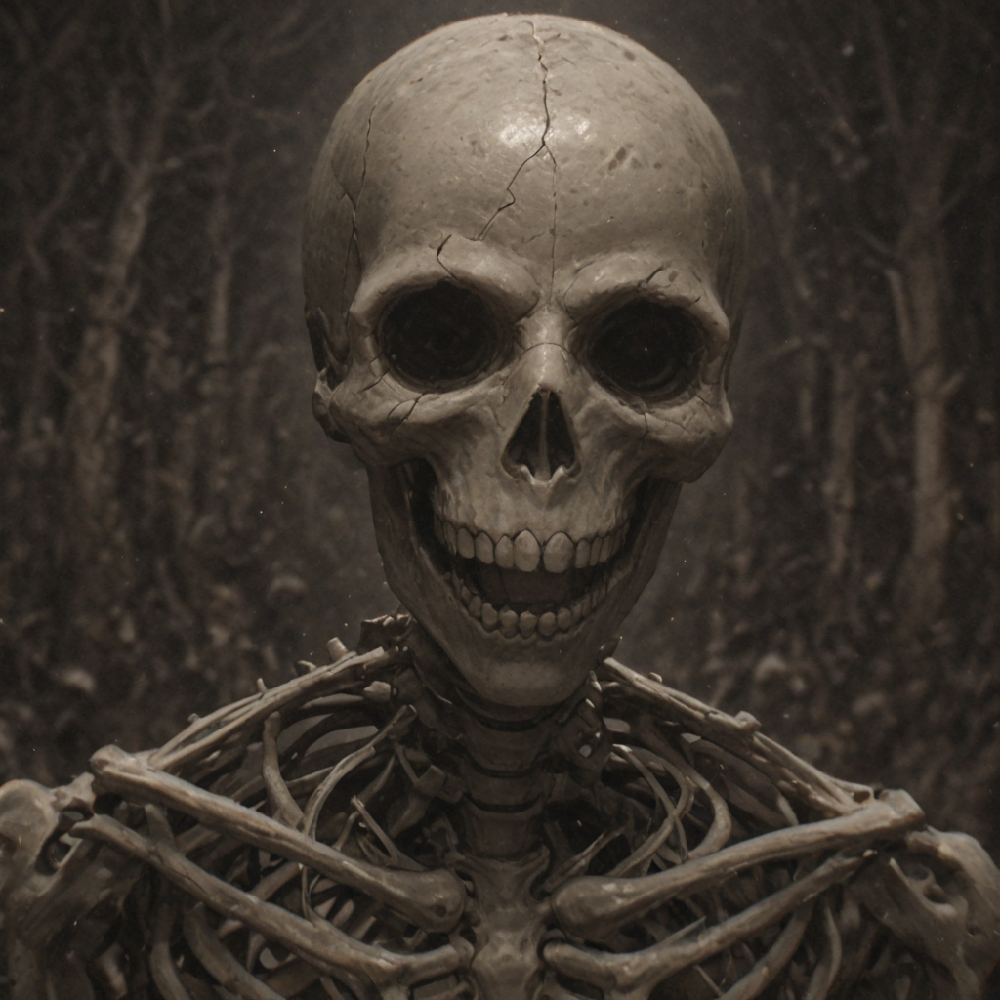
Skeleton
Lacking both soul and mind, they are completely immune to fear and mental effects. Weak but incredibly cheap to mass-produce.
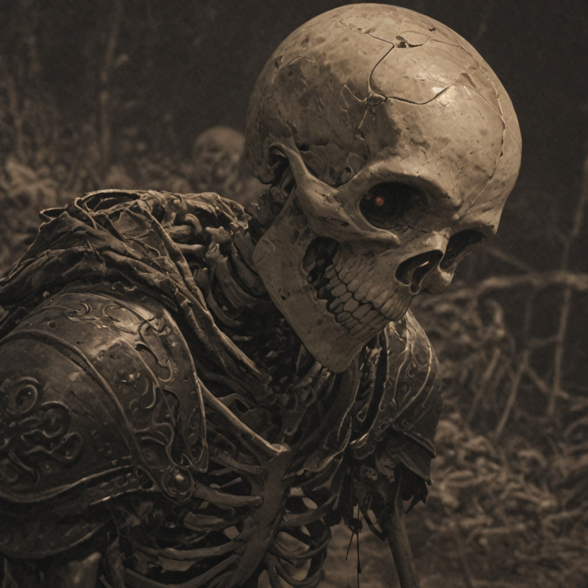
Skeleton Fighter
Basic skeletons equipped with scavenged gear to slightly improve their durability on the frontline.
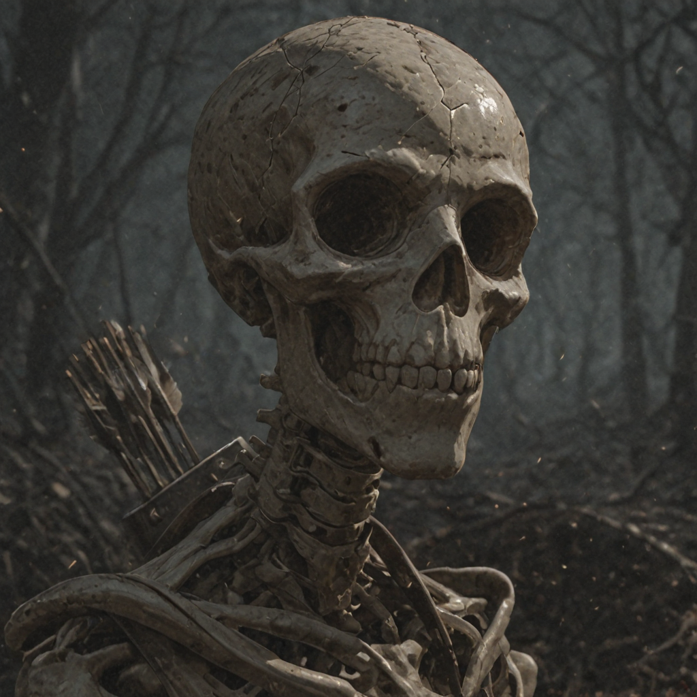
Skeleton Archer
Specialized in long-range combat, using rudimentary bows to rain poisoned arrows upon the enemy forces.
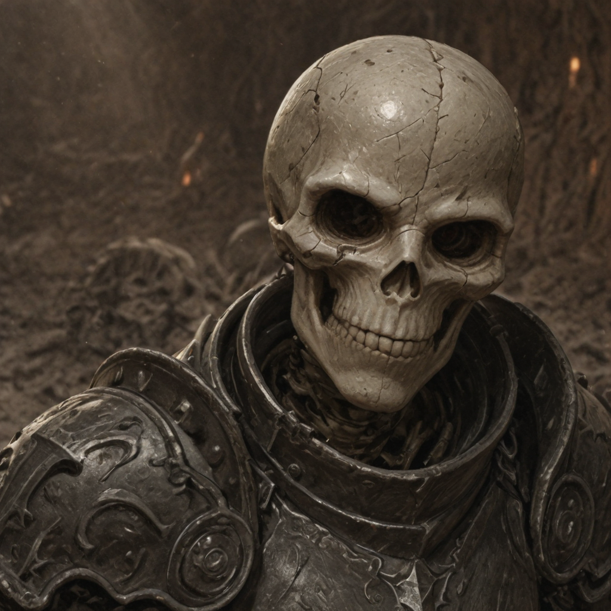
Skeleton Warrior
Fighters whose bones have been reinforced with dense shadow energy to effectively mitigate incoming physical damage.
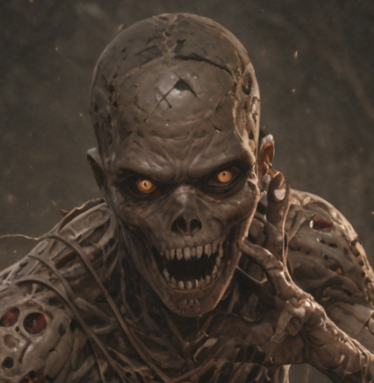
Zombie
Foregoing equipment, these units are grafted with putrid, regenerative skin. They are slower, but far more resilient than regular skeletons.
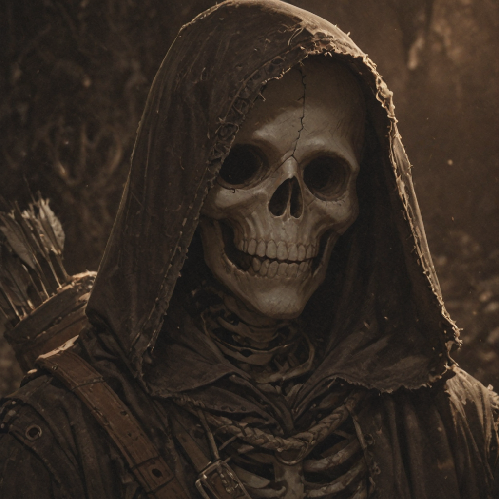
Skeleton Bowman
Enhanced with dark arts to see through magical darkness and illusions, making them the absolute bane of hidden foes.
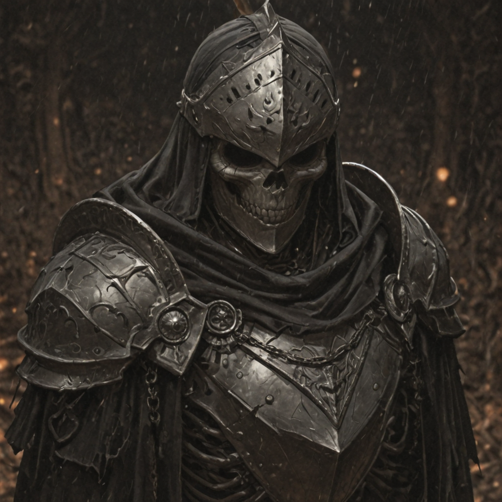
Skeleton Champion
Skeletons possessing unmatched combat prowess. Clad in full plate gear, they are versatile and incredibly deadly frontline fighters.
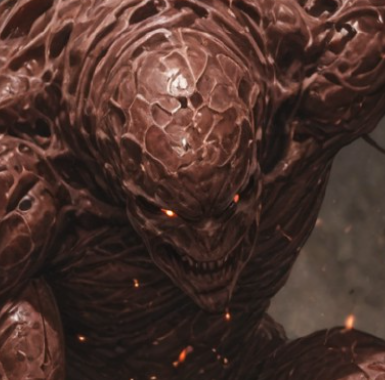
Flesh Golem
A horrifying abomination created by fusing multiple zombies together. They can regenerate rapidly by consuming the flesh of the fallen.
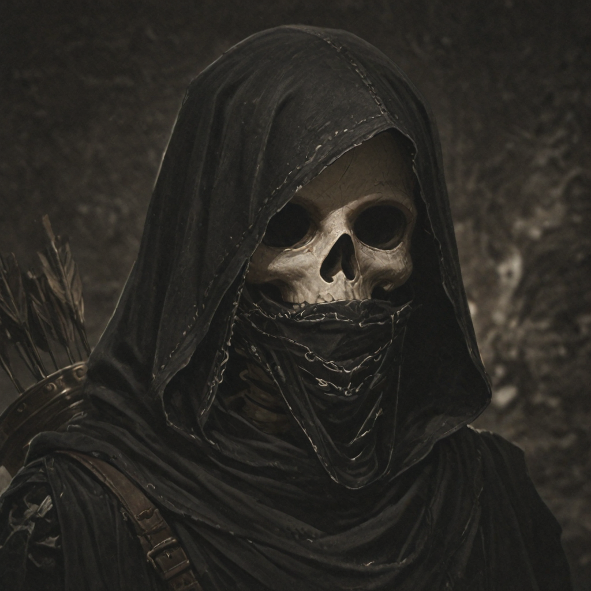
Skeleton Sniper
Possessing supernatural perception, they can strike an enemy's weak spots from afar for massive, critical damage.
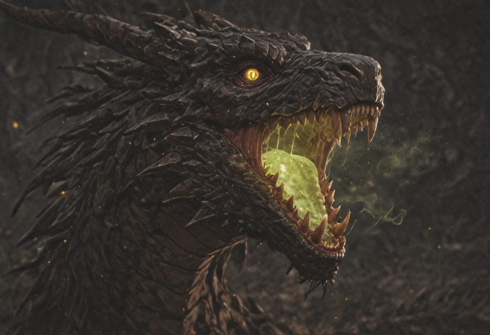
Death Dragon
The masterpiece of any Necromancer’s career. Constructed from countless corpses and infused with overwhelming dark power, it decimates platoons with its corrosive poison breath.